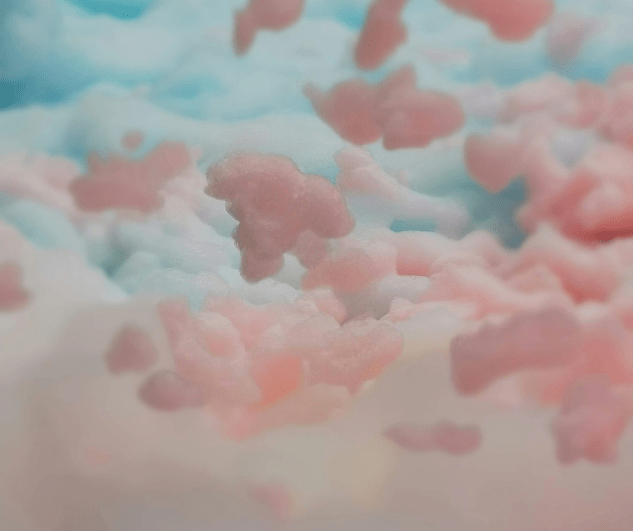
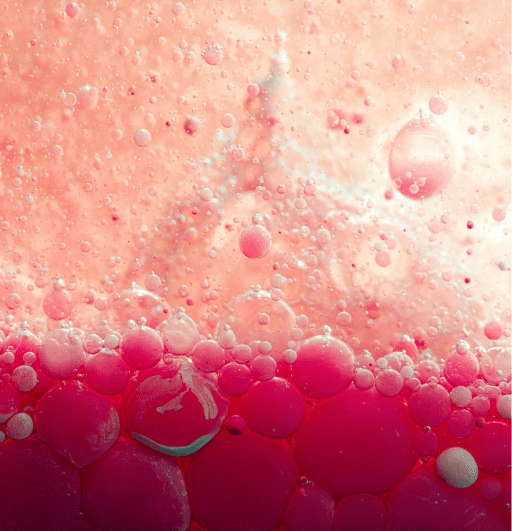

The Viritual Lab
"Elephant toothpaste" is a fun and visually impressive experiment that demonstrates the principles of exothermic reactions and the decomposition of hydrogen peroxide.

Ingredients:
- 1/2 cup 20-volume hydrogen peroxide (6% solution, which you can find at beauty supply stores or online)
- 1 tablespoon (one packet) of dry yeast
- 3 tablespoons of warm water
- Liquid dish soap
- Food coloring (optional, for added visual effect)
- Safety goggles
- A plastic bottle (16 oz or larger)
- A tray or pan to contain the foam
Instructions:
- Prepare your workspace: Make sure you're working in a well-ventilated area and cover your work surface with a tray or pan to contain any spills or overflow.
- Put on safety goggles: Handling chemicals like hydrogen peroxide can be dangerous, so it's important to protect your eyes.
- Mix the yeast: In a small bowl, mix the dry yeast with warm water. Stir until the yeast is completely dissolved.
- Prepare the bottle: Place the plastic bottle on the tray or pan. Add a few drops of liquid dish soap into the bottle. If desired, add food coloring to the soap for a colorful effect.
- Add the hydrogen peroxide: Pour the 1/2 cup of hydrogen peroxide into the bottle. Swirl the bottle gently to mix the soap and hydrogen peroxide together.
- Add the yeast mixture: Pour the yeast mixture into the bottle. Quickly step back and watch the reaction!
- Observe the foam: As soon as the yeast mixture comes into contact with the hydrogen peroxide, a foamy reaction will occur. This is due to the decomposition of hydrogen peroxide into water and oxygen gas, which is catalyzed by the yeast. The soap helps to trap the oxygen gas, creating a large volume of foam that pours out of the bottle.
- Cleanup: Once the reaction has finished, you can safely dispose of the foam. Rinse out the bottle and tray with water.

Safety Precautions:
- Always wear safety goggles when handling chemicals.
- Use a tray or pan to contain spills and overflow.
- Do not touch the foam with bare hands, as it can cause skin irritation.
- Ensure proper ventilation in your workspace.
Enjoy your elephant toothpaste experiment, and have fun exploring the science behind it!